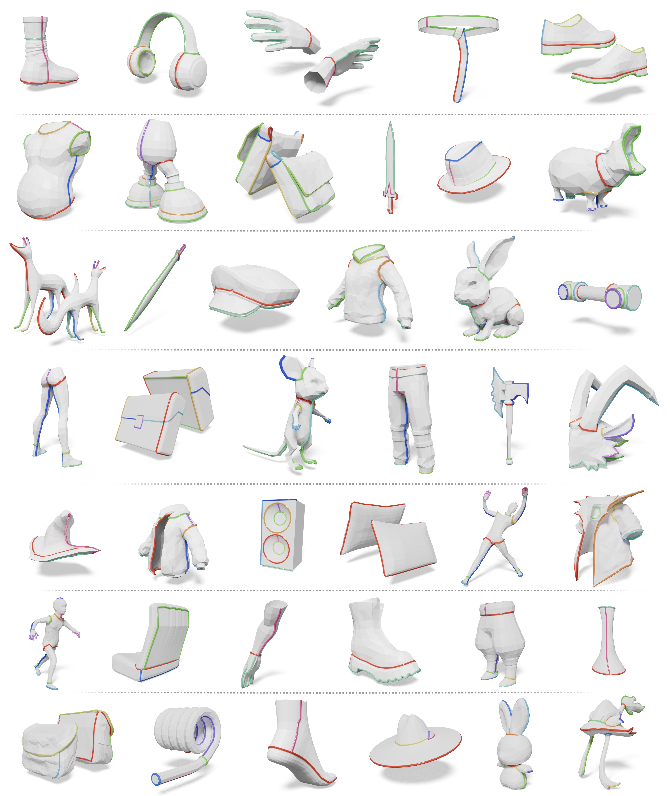
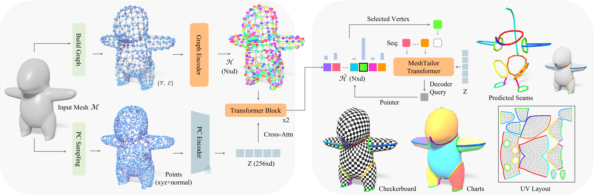
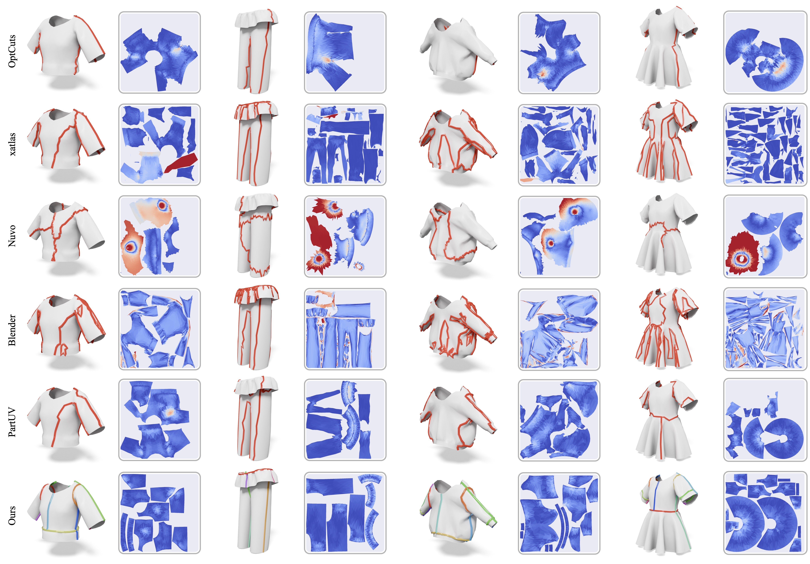
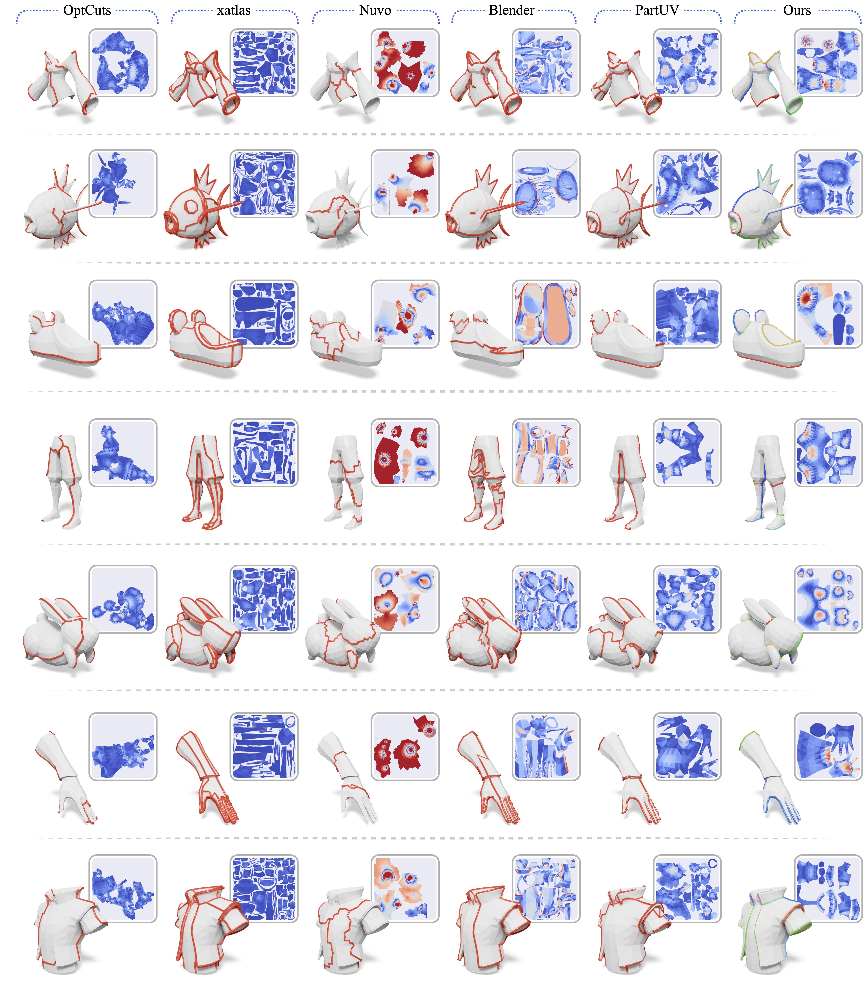
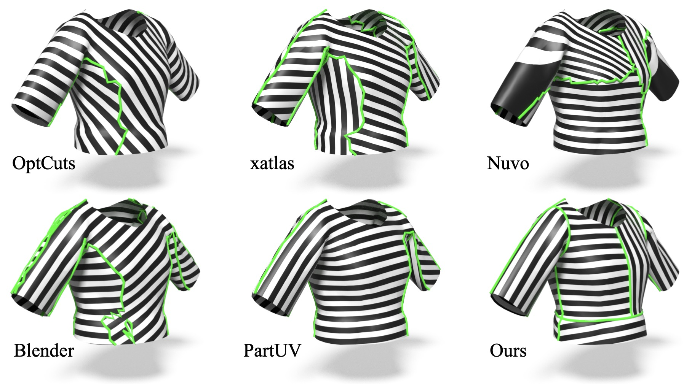
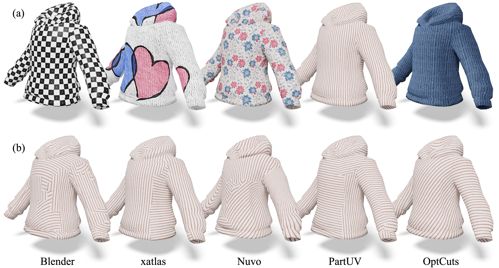
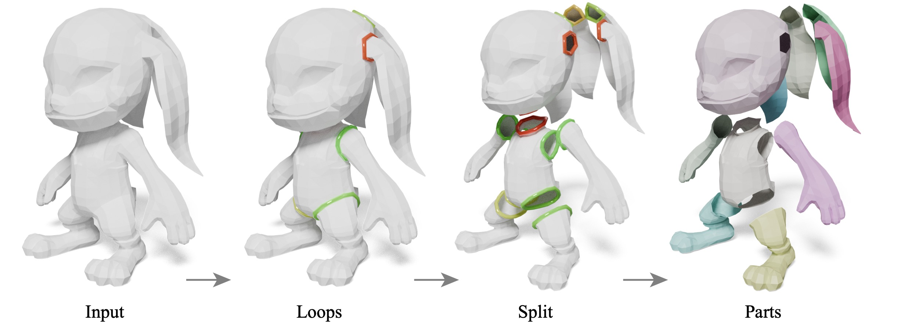
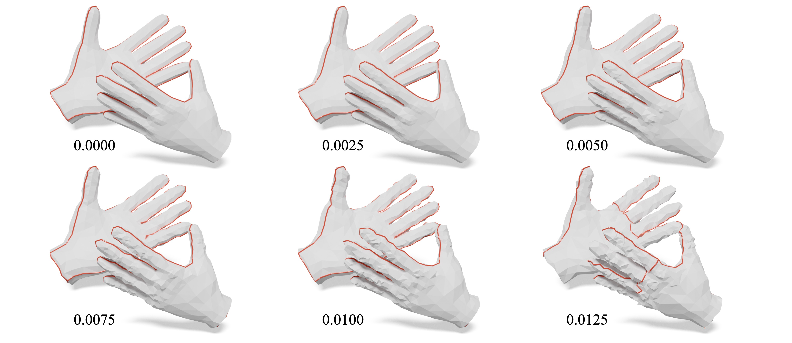
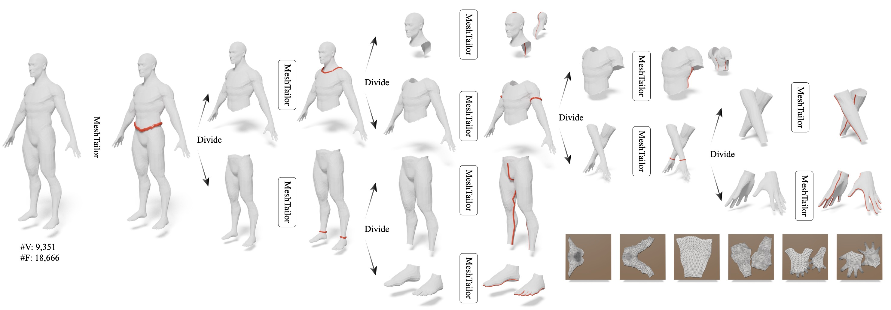

We present MeshTailor, the first mesh-native generative framework for synthesizing edge-aligned seams on 3D surfaces. Unlike prior optimization-based or extrinsic learning-based methods, MeshTailor operates directly on the mesh graph, eliminating projection artifacts and fragile snapping heuristics.
We introduce ChainingSeams, a hierarchical serialization of the seam graph that prioritizes global structural cuts before local details in a coarse-to-fine manner, and a dual-stream encoder that fuses topological and geometric context. Leveraging this hierarchical representation and enriched vertex embeddings, our MeshTailor Transformer utilizes an autoregressive pointer layer to trace seams vertex-by-vertex within local neighborhoods, ensuring native coherent seams.
Extensive evaluations show that MeshTailor produces more coherent, professional-quality seam layouts compared to recent optimization-based and learning-based baselines.

MeshTailor produces coherent seam layouts across diverse categories and shapes, including thin components, articulated silhouettes, and complex concavities. Colored curves denote different predicted seam chains overlaid on the input meshes (paper Fig. 21).

Overview of MeshTailor. Left: The dual-stream encoder. The input mesh is processed in parallel: the top stream extracts topological connectivity features via a Graph Encoder on the mesh topology, while the bottom stream samples surface points to extract global shape semantics using a pretrained point-cloud encoder (frozen during training). These representations are fused via cross-attention within Transformer blocks. Right: The autoregressive decoder. At each step, the MeshTailor Transformer conditions on the previously generated sequence (“Seq”) to produce a decoder query. A pointer layer attends to the enhanced vertex embeddings to select the next vertex (green box), which is appended to the sequence. The resulting seam chains partition the mesh into UV charts, visualized here with checkerboard texturing to show low distortion, color-coded charts, and the final 2D UV layout.

Seam layout and area distortion comparison on GarmentCodeData. For each method, we show the predicted seams on the 3D mesh (left) and the corresponding area distortion heatmap on the UV layout (right). While prior methods often produce fragmented or jagged cuts that lead to irregular UV islands, MeshTailor generates cleaner, garment-aligned seam structures with coherent chains and loops, resulting in more regular, compact UV charts while maintaining competitive distortion. Different colors in our seam visualizations indicate distinct seam chains (and loop cuts), highlighting the structured and editable output of our representation.

Seam layout and UV area distortion comparison on TexVerse. We qualitatively compare MeshTailor with OptCuts, xatlas, Nuvo, Blender Smart UV Project, and PartUV on diverse assets from TexVerse. Compared to existing baselines that often produce fragmented charts or jagged cut boundaries, MeshTailor generates cleaner, mesh-aligned seams with coherent long-range chain/loop structures while maintaining competitive distortion. Different colors in our results denote distinct seam chains/loops, highlighting the structured and editable seam representation.

UV quality under a tiling stripe texture. Fragmented charts and irregular boundaries often cause stripe discontinuities and misalignment, while MeshTailor preserves coherent regions with consistent texture flow.

Production-oriented UV usability. (a) Our UV layout supports diverse texture appearances on the same garment. (b) Stripe tiling with a user-edited logo, showing results from prior methods.

MeshTailor naturally produces loop cuts as part of its seam structure. Applying the predicted loops (middle), we recursively split the input mesh into connected patches with clean, artist-like boundaries, yielding a part decomposition (right) that is directly usable for downstream asset processing.

We perturb the input mesh by adding Gaussian noise to vertices with increasing σ. Predicted seams remain stable when σ < 0.010 and gradually degrade as σ increases, with noticeable extra local cuts at σ = 0.0125.

Divide-and-conquer inference. Starting from a high-resolution mesh, MeshTailor predicts a major seam loop to split the surface into disconnected components, then recursively applies the same seam-tracing process to each sub-mesh. This recursion progressively decomposes the asset into semantically coherent parts, yielding clean, edge-aligned seams and the corresponding UV charts.
@misc{ma2026meshtailorcuttingseamsgenerative,
title={MeshTailor: Cutting Seams via Generative Mesh Traversal},
author={Xueqi Ma and Xingguang Yan and Congyue Zhang and Hui Huang},
year={2026},
eprint={2603.27309},
archivePrefix={arXiv},
primaryClass={cs.GR},
url={https://arxiv.org/abs/2603.27309},
}